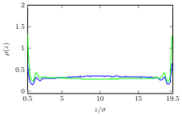
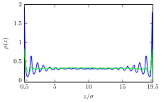
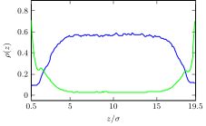
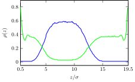
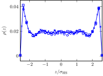
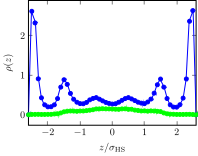
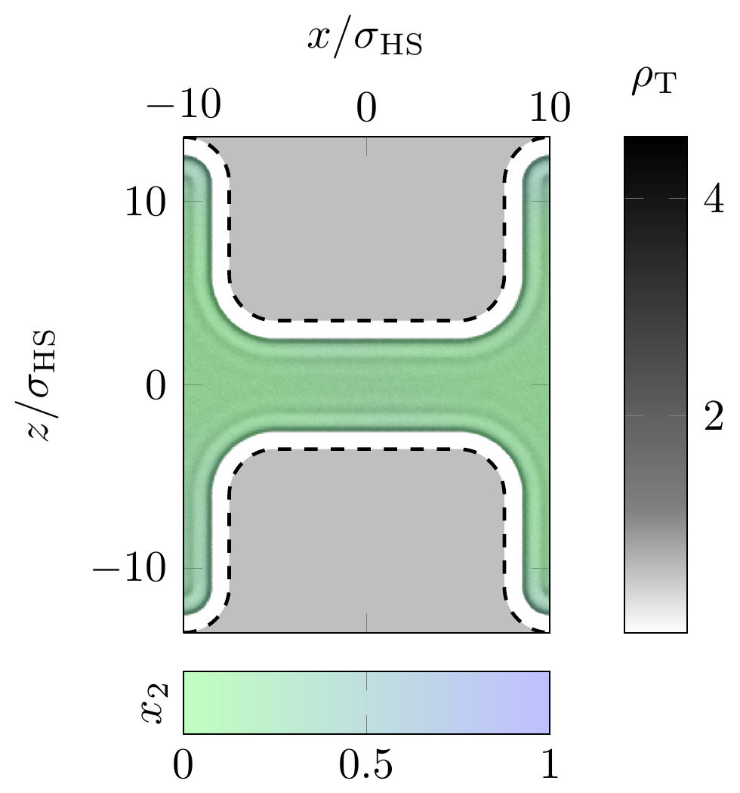

Effet d'un champ électrique sur la structure et la dynamique de suspensions colloïdales confinées : étude numérique par simulation
Salomon Chung, PLMC (UPEC)
Plan
- Introduction : définition, motivation et modèle
- Propriétés d'équilibre en faible confinement
- Aspects dynamiques de l'inversion de population sous champ
- Conclusion et perspectives
Introduction
Suspensions colloïdales
Définition
- Dispersion de macro particules dans un milieu porteur.
- Taille : du nanomètre au micromètre.
- Large gamme d'échelle de longueur et de temps
Propriétés
- Objets supramoléculaires → flexibilité : modulation des interactions entre les particules en jouant sur leur structure, physico-chimie, le milieu porteur, la géométrie et les champs extérieurs
- Applications très diverses : alimentaire, cosmétique, nanotechnologie, etc
- Etudes théoriques et expérimentales innombrables
Cadre
- A partir des travaux antérieurs de l'équipe (simulation, modélisation, physique statistique, physique des liquides) : tenter de dégager les paramètres pertinents et les tendances généraux → guide pour l'expérience (généricité vs. spécificité, théorie → application)
- 1 axe particulier : colloïdes + champ extérieur, pour contrôler de manière réversible le système.
- Dans un mélange : possibilité d'inversion de population sous champ (C. Brunet, 2009, PLMC). Etude suffisamment importante pour être poursuivie.
Situation physique
Manipulation par un champ extérieur de la composition d'un mélange binaire confiné.

|
|
Modèle physique
- Mélange binaire à diamètres non-additifs : sphères dipolaires (SD) et apolaires (SA), dont les interactions à courte portée sont purement répulsives (simplification). Correspond aux colloïdes stabilisés stériquement ou avec une très courte longueur d'écrantage.
- Géométrie de confinement : pore fente (deux murs parallèles sans structure) ou pore de taille finie avec interface explicite avec la phase volumique (dynamique).
- Champ extérieur : soit un champ uniforme normal ou parallèle aux parois (pore-fente), soit un champ normal localisé (pore avec interface explicite en DM).

|
La non-additivité favorise la démixtion. Pour la DM : assouplissement de l'interaction dure → potentiel mou (e.g. WCA).
But
- Approfondir l'étude des propriétés d'équilibre du fluide confiné dans un pore-fente : généralisation, éclairage supplémentaire.
- (Nouveauté) Etude de la dynamique pour des applications avec une géométrie plus réaliste (interface slab/bulk) : transition entre 2 états d'équilibre, temps caractéristique, etc.
sphères dures + dipôles (non additifs) et champ extérieur : ingrédients essentiels.
Ce modèle pourrait sembler particulier :
- à l'échelle moléculaire : probablement
- à l'échelle supramoléculaire : moins évident
Champ et dipôles électriques
- contraste des moments dipolaires ($\vec{\dip}$) : particules polarisables et les autres moins (contraste diélectrique, index match particule - solvant)
- stabilisation stérique : non-additivité probablement faisable (e.g. interpénétration des polymères)


Champ et dipôles magnétiques
Pour les systèmes magnétiques (plus fréquemment étudiés dans la littérature) : Facilement réalisables pour les colloïdes. e.g. ferrocolloïdes : séparation de phase induite par champ, principe des filtres optiques.


Elaboration d'un pore
(insérer : image)
Méthodes de simulation
- Complexité du modèle : pas de méthodes analytiques
- Système à l'équilibre : Monte-Carlo Metropolis (développé en interne)
- Système hors équilibre : dynamique moléculaire + Langevin ($\espresso{}$)
- Interactions dipolaires : sommes d'Ewald + correction pour un pore ([YB99], ELC)
Effet d'un champ sur un mélange confiné de sphères dipolaires et apolaires : propriétés à l'équilibre
Plan
- Modèle
- Equilibre de phase
- Champ nul
- Champ perpendiculaire
- Champ parallèle
- Conclusion
Modèle
Géométrie : Fluide dans un pore fente infini (CLP selon $x, y$)

|
|
|
Interaction à courte portée
|
Interactions dipolaires et champ extérieur
|
Etude par simulation Monte-Carlo (canonique et GEMC)
($\ct{N}_\mathrm{\ds} = 1330 \text{ à } 4786$)
Equilibres de phases
Courbes de coexistence obtenues par GEMC
|
bulk : pour différents $\nonAdditivity$ 
La non-additivité favorise la démixtion. |
slab 
Les murs stabilisent le mélange. Etats marqués par des croix : étude de l'effet du champ à ces densités |
Champ nul
$\SMdensity = 0,35$ et $\SMdensity = 0,47$

|

|
"démouillage" des murs par les dipôles |
$\SMdensity = 0,64$ : phases riche et pauvre en dipôles
|
Champ perpendiculaire
$\SMdensity = 0,64$, $\field^\ast = 0.18$ et $\field^\ast = 0.90$
|  |  |
|
|
Champ parallèle
$\SMdensity = 0.47$, $\field_\parallel^\ast = 0,18$
|  |
|
Et en canonique ?
|  |
|
Conclusion
- Le confinement et le champ perpendiculaire stabilisent le mélange.
- Le champ parallèle induit une séparation de phase.
- Ces 2 champs induisent une structuration et/ou une ségrégation au voisinnage de la surface.
Dans la suite de l'étude, nous considérons uniquement des champs perpendiculaires parce qu'ils peuvent conduire à des cycles allumage / extinction réversibles.
Effet d'un champ sur un mélange confiné de sphères dipolaires et apolaires : aspects dynamiques
Motivation
L'évolution temporelle est le mécanisme principal dans certaines applications (e.g. "affichage", réponse à un champ modulé).
Plan
- Modèle
- Profils de densité dans le pore
- Dynamique d'inversion de population pour les systèmes réversibles
- Cycles irréversibles
- Rôle de la taille des particules et loi d'échelle
- Conclusion
Modèle : géométrie et champ
|
Géométrie de confinement 
Interface entre le réservoir de particules et le milieu confiné. |
Champ extérieur
|
Modèle : interactions
Potentiel d'interaction à courte portée
|
|
|
Interactions dipolaires
$u(\vec{r}_\ct{ij}, \vec{\dip}_\ct{i}, \vec{\dip}_\ct{j}) = \frac{1}{4 \pi \permittivity} \left[ \frac{\vec{\dip}_\ct{i} \cdot \vec{\dip}_\ct{j}}{r_\ct{ij}^3} - 3 \frac{(\vec{\dip}_\ct{i} \cdot \vec{r}_\ct{ij}) (\vec{r}_\ct{ij} \cdot \vec{\dip}_\ct{j})}{r_\ct{ij}^5} \right]$Profils de densité dans la région centrale du pore à champ nul
$\SMdensity^\ast = 0,41$; $\SMcomposition = 0,05$; $\ct{N}_\mathrm{\ds} = 718$; $\ct{N}_\mathrm{\as} = 13637$
|

SD |

SA |
- Population "normale" : $\SMdensity_\mathrm{\ds}^\mathrm{slab} \simeq \SMdensity_\mathrm{\ds}^\mathrm{bulk} \ll \SMdensity_\mathrm{\as}^\mathrm{slab} \simeq \SMdensity_\mathrm{\as}^\mathrm{bulk}$.
- Accord MC / MD : système monophasique à l'équilibre
Profils de densité dans la région centrale du pore après allumage du champ
|

cercles vides : SD, cercles pleins : SA |
|
Cycle de champ réversible :

|
profil de densité des dipôles |
$\chargeDensity^\ast = 0$
|
profil de densité des dipôles |
$\chargeDensity^\ast = 0 \to 14,3$
|
profil de densité des dipôles |
$\chargeDensity^\ast = 0 \to 14,3 \to 0$
Dynamique de l'inversion de population sous champ

|
|
Echelle de temps : $\unitTime = \unitLength \sqrt{\unitMass / \unitEnergy} = 2,55e-5 \mathrm{s}$ ?
Loi d'échelle en fonction de $\frictionCoefficient^\ast$ et champs croissants

|
Champs croissants : saturation prématurée |
Cycles irréversibles
$\frictionCoefficient^\ast = 0,046$ (pour accélérer les simulations)
|
$\SMcomposition = 0,1$; $\SMdensity^\ast = 0,6$ |
|
|  |
$\chargeDensity^\ast = 0$
$\chargeDensity^\ast = 0 \to 7,15$
$\chargeDensity^\ast = 0 \to 7,15 \to 0$
Cycles irréversibles intermédiaires
$\SMdensity^\ast = 0.52$; $\SMcomposition = 0, 1$; $\delta = 0,2$
Après extinction du champ : état métastable.
Modèle
- Comportement linéaire en $\frictionCoefficient^\ast$, coefficient de frottement réduit : $\frictionCoefficient^\ast = \frictionCoefficient \unitTime / \unitMass$, $\frictionCoefficient = 3\pi \unitLength \dynamicViscosity$ (à dilution infinie...)
- Echelle de temps newtonnienne : $\unitTime = \unitLength \sqrt{\unitMass / \unitEnergy}$; $\unitMass \propto \unitLength^3$
- La loi d'échelle en fonction de la taille $\unitLength$ est déterminée par $\unitEnergy$ du potentiel WCA.
- Nécessité d'un modèle microscopique pour l'interaction (répulsive) entre colloïdes : répulsion en $1/r^{12}$ distribuée uniformément dans une sphère de diamètre $\unitLength$. $\epsilon(\unitLength)$ déduit de $\phi_\mathrm{ss}$ via l'équivalence du second coefficient du viriel $\secondVirial$ pour $u_\mathrm{WCA}$.
Rôle de la taille des particules et loi d'échelle
2 régimes :
|
$t_\mathrm{cycle}$ varie sur plusieurs ordres de grandeur en fonction de $\unitLength$ : marge sur les temps de réponse en fonction des applications envisagées.
Conclusion
- Approfondissement de l'étude des propriétés d'équilibre dans un pore large d'un mélange binaire sous champ (mouillage, démouillage, structuration, séparation de phase, etc.).
-
Etude de la dynamique de l'inversion
de population sous champ dans un pore étroit en contact avec
un réservoir :
- influence sur le temps de remplissage/vidage de différents paramètres (intensité du champ, densité et composition → irréversibilité).
- tentatives de prédiction du temps de réponse (des fluides moléculaires aux suspensions colloïdes).
- Outils de simulation numérique disponible en open source (modifications nécessaires apportées aux codes).
Perspectives
-
Etude du pore large :
- Dynamique de transition : durée de la structuration, relaxation.
- Caractérisation des méso structures : formes, persistance.
-
Approfondissement de la dynamique de l'inversion de population :
- Echelle des colloïdes : augmentation du coefficient de frottement réduit, prise en compte des interactions hydrodynamiques (e.g. DPD), substitution par des macro ions, structures sous-jacentes plus réalistes (→ expérience).
- Echelle du fluide moléculaire : spécification des interactions particule-particule et particule-mur (live wall).
Méthodes de simulation
Introduction
- Objectif : étude d'un système comportant un grand nombre de particules en interactions
- Fondement théorique : mécanique statistique
- Mise en œuvre : simulations numériques
Méthodes de simulation
- Modélisation et calcul des interactions
- Evolution à partir d'un état initial
- Reproductibilité des résultats
Monte-Carlo Metropolis
Echantillionnage préférentiel
- $p(x)$ densité de probabilité de la configuration $x$ : $$\langle a \rangle_p = \int \dif{x}\ p(x) a(x)$$
- $x_1, ..., x_\ct{M}$ configurations pondérés et $\ct{M} \to \infty$ : $$\frac{1}{\ct{M}} \sum_{\ct{i}=1}^\ct{M} a(x_\ct{i}) \longrightarrow \langle a \rangle_p$$
Monte-Carlo Metropolis
Algorithm de Metropolis
$A[x \to y]$ probabilité d'acceptation :
if (acceptation_probability < 1.) then
call random_number(rand)
if (rand < acceptation_probability) then
success = .true.
else
success = .false.
end if
else
success = .true.
end if
Dynamique moléculaire
Verlet vitesse :
|
$$\vec{x}(t+\Delta t) = \vec{x}(t) + \Delta t \ddrt{x(t)}{t} + \frac{\Delta t^2}{2} \ddrt[2]{x(t)}{t}$$ $$\vec{v}(t + \Delta t) = \vec{v}(t) + \frac{\Delta t}{2m} \left( \vec{F}(t) + \vec{F}(t + \Delta t) \right)$$
Dynamique de Langevin
\[ m \ddrt{\vec{v}(t)}{t} = -\frictionCoefficient \vec{v}(t) + \vec{\randomForce}(t) + \vec{F}_\text{ext} \]-
Un théorème de fluctuation-dissipation relie :
- $\frictionCoefficient$ : le coefficient de frottement (macroscopique)
- $\vec{\randomForce}$ : la force aléatoire (microscopique)
Loi de Stokes pour une sphère de diamètre $\diameter$ : $\frictionCoefficient = 3\pi \dynamicViscosity \diameter$.